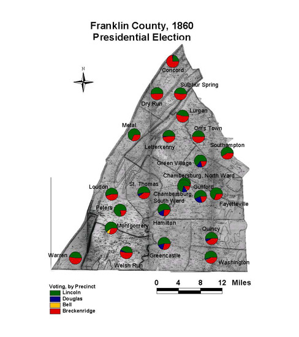

Franklin County: Presidential Voting by Precinct, 1860
This map of Franklin County shows the presidential vote of 1860 by precinct. Lincoln's support came from the broad middle of the county, centered in places with visible African American populations, such as Southampton, Montgomery, and the South Ward of Chambersburg.
Click on the map for a larger image.

The map is based on GIS data and soil type data derived from a 1978 U.S. Geological Survey soil map. The map is derived from a D. H. Davison map of Franklin County, published in 1858. The Davison map has been georeferenced at the Virginia Center for Digital History, using ESRI Arc Info to produce a Geographic Information Systems map and database of households.
Note: Original precinct boundaries are not available. Precinct boundaries were established in the GIS using Thiessen polygons around precinct stations as central places.